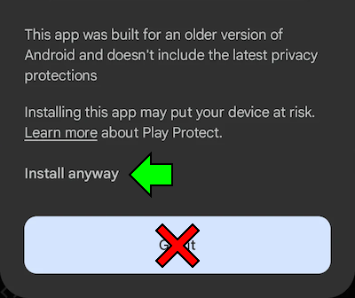

If you want to ask questions about Sonic Advance International and game modding, you may find the answers that you are looking for in this page!
Select a question to showcase the answer.
Frequently Asked Questions
Why does the game have a terrible frame rate?
The game is actually intended to run at such a low frame rate. This is not a glitch, nor a performance issue.
For more information, check out the Project 60fps page.
Why can't I install the game?
Because the game is designed for older Android devices, you may encounter an "Unsafe app blocked" message. When this occurs, press "Install anyway" to proceed.

If the problem still persists, contact Furrican via the Game Jolt/itch.io project page, or via the Furrican Homepage.
Is Sonic Advance International safe?
Yes. Like many Sonic fangames, this game does not contain any malware or other malicious programs whatsoever.
Can I play Sonic Advance International on PC?
Of course. To do so, you need an Android emulator (like BlueStacks).
Is it possible to add options to adjust the size and opacity of the game controls?
Unfortunately, there are currently no plans on adding options related to the game controls display. But when there is a possibility to add more options in the options menus, this will be the opportunity to add these options.
When will the Tiny Chao Garden come out?
There are no plans on adding the Tiny Chao Garden from the original GBA version.
However, it would be nice to partner with someone who can make a fanmade Tiny Chao Garden for Android devices.
Extra Questions
Is Sonic Advance International a fangame?
No. Sonic Advance International is actually a mod of an already existing Android port of Sonic Advance.
This Android port was released in 2011 via a service named Puyo Puyo! Sega. This service is provided by SEGA exclusively for Japanese mobile phones.
Why is the music different from the original GBA version?
Because the Android port of Sonic Advance was designed alongside other games on Japanese mobile phones in mind, the soundtrack are composed of .mid music tracks.
A few music tracks are different from the original GBA version, due to those replaced (the Options theme, Invincibility theme and the 2 first bosses from X-Zone) were licensed by an outsourced team, and not owned by SEGA.
Whereas the GBA MIX soundtrack in the game mod isn't meant to take the same soundtrack from the original GBA version.
Instead, it remixes the MIDI soundtrack by using the instruments from the original GBA version (with the exception being the Invincibility theme).
The game stops working while playing. What can I do?
If the game stays on the a black screen before starting a stage, that means the game is actually taking more time to load, most likely due to your Android device being weaker in performance.
Because of the new sound system in place, the game may load longer than expected, even with the tips screen option turned off.
If the game soft-locks at a certain point, please report this issue to Furrican via the Furrican Homepage.
Is it possible to transfer save data to another device?
Unfortuantely, Sonic Advance International does not allow you to load save data from external save files.
However, transferring save data is a feature that will likely be available in a future update.
Which version of Sonic Advance the International mod is running on?
Sonic Advance International is using the Chinese version of the Android port of Sonic Advance. This version was published by a Chinese mobile service named eGame (爱游戏).
This version was chosen since the MOST Mods release (Version 3.0.0), as it features an external link option in the main menu, which allows to link the game to a website.
How long does Sonic Advance International take to be released?
Sonic Advance International is part of a long-running series of game mods made by Furrican. Even though it started all the way back in 2020, the mod projects didn't have its full-focused development until the MOST Mods project on May 2024.
Because the International Mod project is very close to the MOST Mods, this means it took approximately 7 months for Sonic Advance International to be released.
Although, with more available time and programming knowledge, the mod development could have been shorter than this.
About Game Modding
I would like to make my own mod. Can I take Sonic Advance International to work on it?
Yes. Sonic Advance International is free to be downloaded and modified at your own will.
However, while publishing your own mod, make sure to leave credits to Furrican and GdGohan as original modders.
How to mod Sonic Advance on Android?
Sonic Advance on Android can be modded by using different software tools.
It's best to mod on PC for better visibility, but you can also mod on your Android device.
To decompile and/or modify the game, you need an APK editor software tool (like APK Easy Tool, APK Editor or MT Manager).
For the sprites, you can change them by using a drawing software tool (like Paint.net, IbisPaint or Paint Tool SAI).
And for more advanced modifications, APK editor tools can decompile the game's code to Smali. If you have the programming skills and knowledge, you can change the game's code to implement additional functions and modifications.
When I try to mod Sonic Advance on Android, the game doesn't work or is corrupted. What can I do?
If you have touched the game's code, but have no idea how to solve it, try to decompile the game again with the APK editor tool.
If you want to touch the game's code, make sure to understand the programming logic before making changes in the game's code. Otherwise, the game might won't boot.
For the graphics, make sure to set sprites correctly, or the result won't look pretty.
Also, Neo Green Hill Zone has a water animation for the background. If you replace the background with another random one, your background might look corrupted when moving around.
I don't understand Smali language. What can I do?
Smali is a specialised language used to run Android apps. If you want to have a better understading of the game's code, you can convert Smali code to Java by using a Java decompiler software tool (like JADX).
However, some parts of the code won't be decompiled properly, due to compatibility issues. And you cannot change the code when converted into Java to recompile the game directly.
How to prevent my mod to replace the Sonic Advance International app during installion?
To prevent replacing the Sonic Advance International app by your mod, you need to change the package name using an APK editor tool. The package name of Sonic Advance International is int.com.sega.sonicadvance.
On a side note, the game cannot be installed when the version number is lower than the installed app, unless the package name is different than the installed app.
I would like to add a new language to the game. What can I do?
If you want to help for the translation, either by adding new languages or even correcting probable grammar/verbal inconsistencies, you can extract the game's APK file and verify the content in the lang folders. Otherwise, contact Furrican so he can send you the language folders.
Here are the available languages in the game and their folder names:
lang1: English
lang2: French
lang3: Spanish
lang4: Brazilian Portuguese
lang5: German
lang6: Italian
lang7: Russian
lang8: Japanese
lang9: Simplified Chinese
And here are the possible languages that can be added in the game:
Latin Spanish
Traditional Portuguese
Turkish
Traditional Chinese
You can also work on other languages of your preferences. However, some languages may only be verified by your own responsibility.